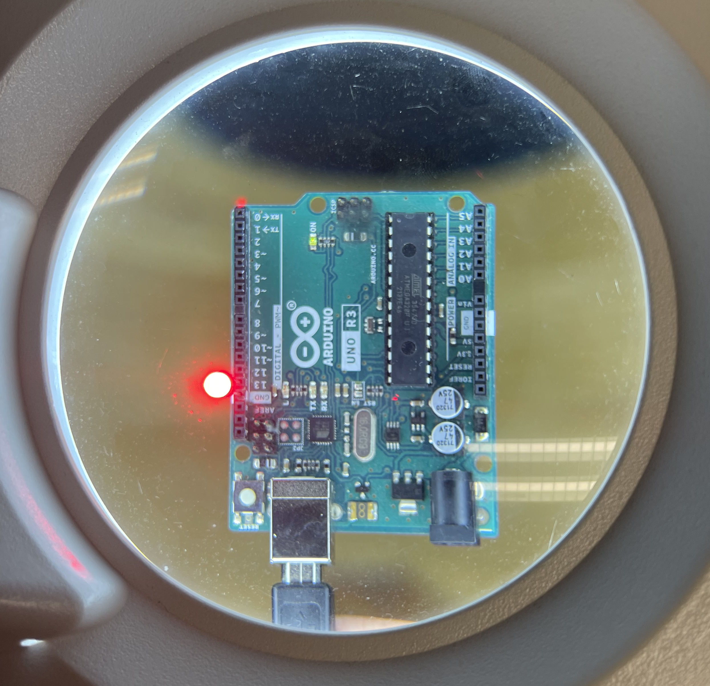
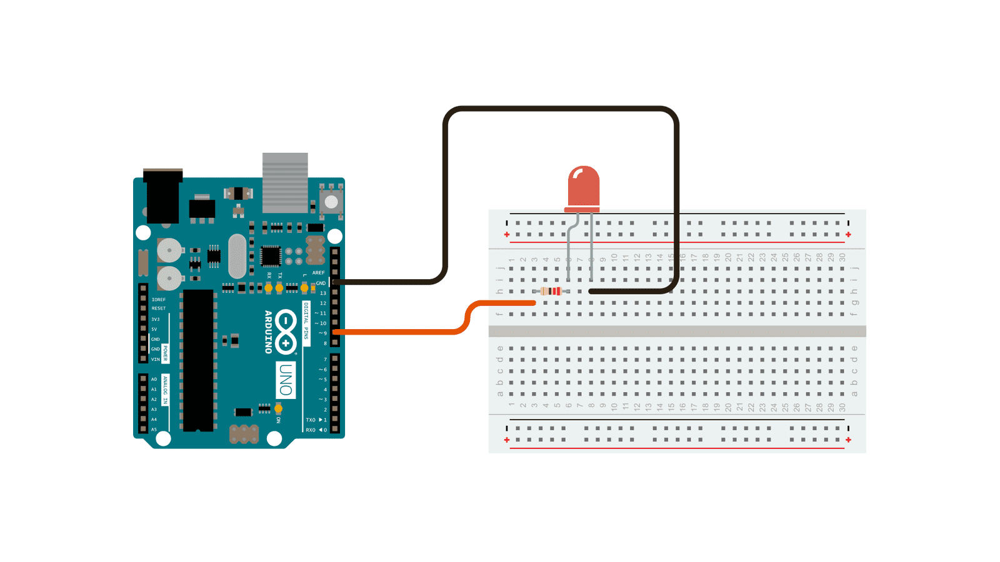
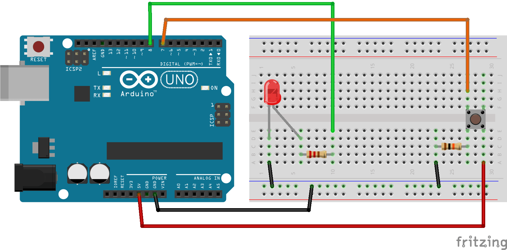
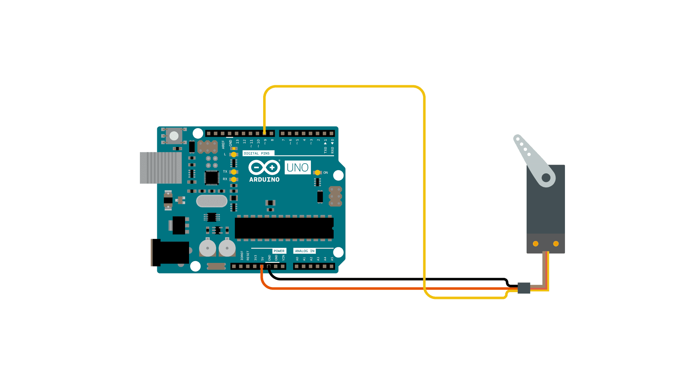

-

Basic Familiarity
Week 2Get familiar with the Arduino board and programming concepts.
Basics -

Blink (Turn On and Off)
Week 2The most basic example. Learn how to power something on and off.
Basics -

Fade / Fading
Week 4A basic example to showcase Pulse Width Modulation, conditional statements and for loops.
Basics -

Button
Week 4An example that uses a button to turn an LED on and off depending on whether its pressed or not pressed.
Basics -

analogReadSerial
Week 4An example that uses an analog signal as an input. Introduces the serial monitor to see data.
Basics -

LED Toggle w/Button
Week 5An example that uses a button to toggle an LED on and off.
Basics -

LED Flash w/Functions
Week 5An example that uses function called flash() to make an LED flash.
Basics -

Servo Minimal Example
Week 5An example that showcases the most minimal example with servo motors.
Servo Control -

Sweep
Week 5An example that showcases how to change position of servo motor.
Servo Control -

Servo Control w/Potentiometer (Knob)
Week 5An example that controls servo motor with a potentiometer.
Servo Control